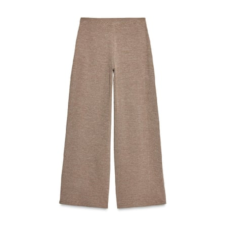
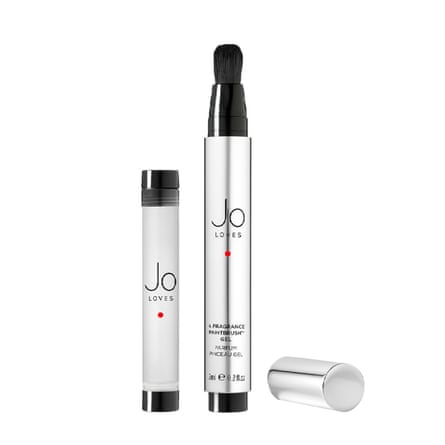
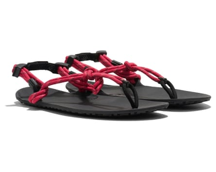
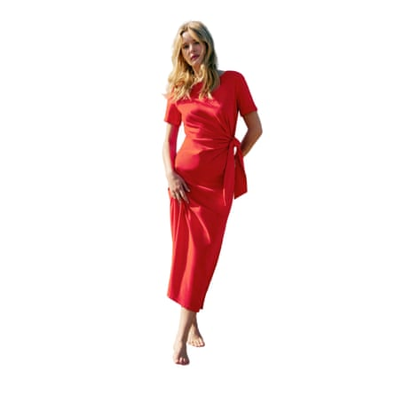
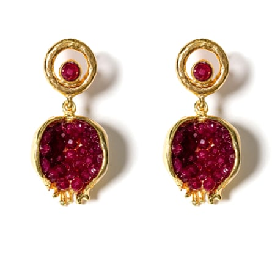
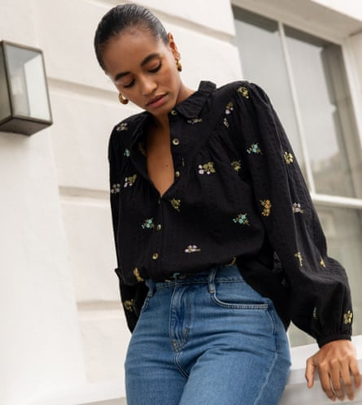
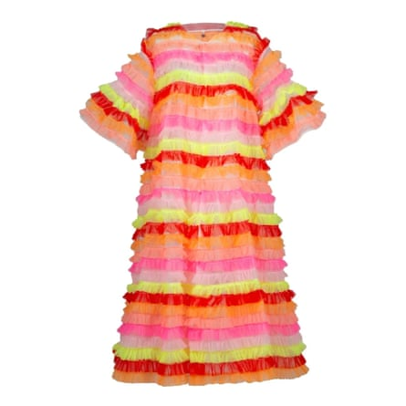
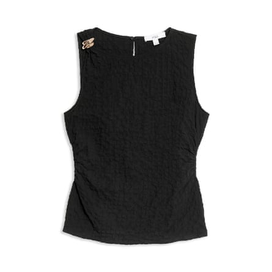
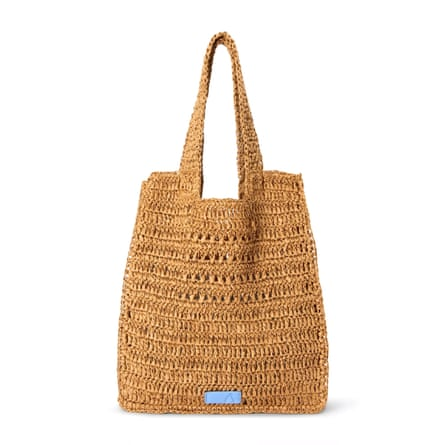
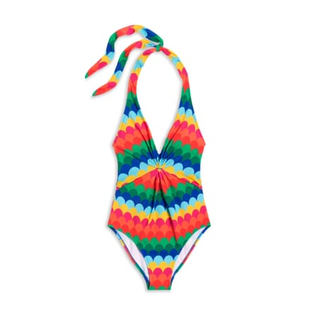

I t is so bloody hard to pack the perfect holiday suitcase , and so deeply satisfying when you get it right. One of the few moments when I really feel like a competent grownup who has everything under control, rather than someone who is winging it and dropping plates left, right and centre, is when I manage to pack a great case.
To not forget anything crucial, but also not overstuff to zip-busting point, gives me a sense of control in a world full of chaos, and gets my holiday off to a serene start. So, in anticipation of peak holiday season, my July edit is devoted to pieces that are worthy of your precious suitcase space. Includes: travel trousers (my current obsession), conversation-piece earrings (my perennial obsession) – and scroll to the bottom for the £80 swimsuit that will make you feel like a million dollars.
Travel in these trousers instead of tracksuit bottoms
Textured wide -leg trousers
£25.99 at Zara
I have written recently about the brilliance of trousers that are comfy enough to travel in, but also elegant enough for dinner, and this pair is a great option. A concealed elasticated waistband feels chill but looks sleek, the wide leg looks more modern than a track pant, and the textured neutral fabric elevates. You can wear these with a vest and sweatshirt to travel in, and then with a linen shirt and chunky jewellery for holiday nights.
Smell delicious (and save space in your liquids bag)
Black cashmeran and tonka fragrance paintbrush
£42 at Jo Loves £42 at Space NK
Hot car seats, sun cream, pine-scented walks, figs on a tree, strong morning coffee. Scent is one of the sensory pleasures of holidays, so fragrance is a must-pack for me. If I’m flying, I don’t check in luggage, so liquid space is at a premium. So I’m obsessed with the brilliant marker-pen delivery system of Jo Malone’s Jo Loves fragrance paintbrush. At £42 for a 7ml paintbrush with a refill, this is a good price for a classy scent. I am devoted to the vanilla-coded black cashmeran and tonka scent, which dispels all traces of Jungle Formula Maximum mosquito repellent spray (also a must, the little buggers love my ankles.)
The perfect adjustable, packable, super-lightweight sandal
Genesis Sandal
£45 at Xero From £53.62 at Amazon
Listen, I haven’t actually had a chance to try these out, but I’ve heard so many good reports (they were even in Vogue ) that I wanted to share with you pronto. These sandals are designed for a barefoot feel, with a slim sole and minimal strapping that you adjust to fit. They weigh almost nothing, take up no space, and look really chic with a wide-leg trouser, like the Zara ones above. They come in black or stone, but I’m quite into the raspberry for a pop of colour.
Buy this dress and wear it every summer
Pippa dress
£125 at Sézane
Sézane is such a smart brand. That French-girl effortless chic thing, but properly well thought out. What is brilliant about this dress is the tie-side waist, which gives a much more graceful line than a straight T-shirt dress, can be adjusted to suit you, and gives a relaxed feel that a few creases won’t spoil. (I don’t know about you, but I am absolutely not ironing on holiday.) It comes in fun prints (leopard!), classic black, coral red or a gorgeous soft sea blue.
Take a beach skirt that isn’t basic

Pink broderie cutwork midi skirt
£46 at River Island £46 at Asos
This is one of the secrets of packing light: instead of taking simple basics for daytime and then snazzier pieces for evening, find pieces that do both. That means easy enough for day, fabulous enough for night. A case in point: this skirt, which you can pull on over a swimmy to walk to the beach, throw in the washing machine, and wear out in the evening with a light knit and your fave earrings.
Pack jewellery that makes you smile
Pomegranate earrings with jade accents
£123 at Wolf & Badger
Pomegranates, lemons, tomatoes: all giving summer, right? Wolf & Badger is a great hub for small independent brands, and my go-to for finding unusual jewellery pieces that have real personality. Pomegranates are good luck in many cultures, and to me, they speak of holidays: the red jade seeds inside these little gold pomegranates will sparkle in golden hour light.
Consider: boho blouses don’t have to be white
Black floral embroidered blouse
£49 at Asos £63.75 at Nobody’s Child
That whole dreamy-creamy-cheesecloth pale summer blouse vibe is very seductive but those pieces have a limited shelf life: come September, they lose their allure. Nobody’s Child is such a great brand – sustainable, affordable, British – and I love this dark blouse for a cooler twist on boho and the intricate floral embroidery.
I know this doesn’t look useful, but hear me out!
Vinchi Cálido tulle dress
£304 at Celia B
You are going to think I’ve gone mad, including this in a capsule wardrobe. It is, after all, a trapeze-shaped dress with trumpet sleeves, with neon ruffles in pink, red and orange on a transparent tulle base, and also £304. Basic, it is not. But! Unbuttoned, this piece by Spanish slow-fashion designer Celia Bernardo is the best cover-up on any beach, anywhere, by a country mile. Buttoned up over a nude slip, it is a sensational evening gown. And shoulder robed over a plain bright dress, it is an outfit-maker that will have your back at weddings and parties for summers to come. Look, what I’m trying to say is, I’ve fallen in love with it, and the heart wants what it wants.
The nice top in jeans-and-a-nice-top
Cotton -rich textured hardware detail top
£25 at M&S
It’s “just” a black top, so you can wear it with anything. But it’s also absolutely not “just” a black top, because the lil textured gold knuckle at the right shoulder takes it from blah to Carolyn Bessette Kennedy, and the ruching to the side of the waist gives it soft structure.
You can never have too many summer baskets
Raffia tote
£28 at John Lewis
I’m literally obsessed with them, and this is my latest must-have. The square shape and loose raffia are very Prada -coded, but the price tag – £28 – is most definitely not. Snap up without further ado.
I defy you not to love this swimsuit
Ruched-loop scallop-stripe swimsuit
£80 at John Lewis £85 at Boden
The trouble with swimsuits is that usually you have to make a choice between the fun, exciting one that looks great on Instagram and the sensible, flattering one that has been designed with an actual, real body in mind. This one is a win-win. The rainbow-hued scallops are a California daydream, but the raised waist and central ruching have been well thought out to suit real-world bodies.
Going on holiday soon? We want to know all your best tips: what saves your clothes from getting crumpled, how do you pack light but take everything you want, and what are your best ever holiday buys? Share all your advice by emailing us at thefilter@theguardian.com .